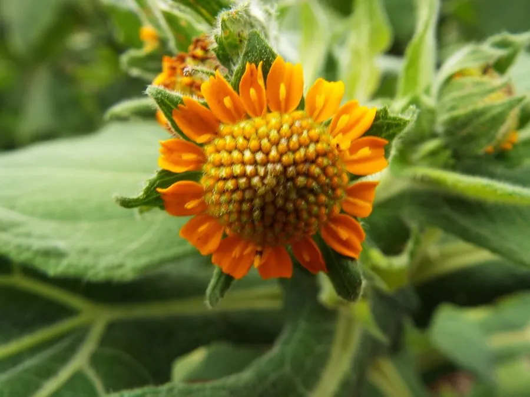

农作物与经济植物 · 植物界
雪莲果 Smallanthus sonchifolius

雪莲果的块根脆甜多汁，富含低聚果糖，可当水果生吃，也能腌渍、制汁，是原产安第斯山区的特色根茎作物。
- 分类
- 门被子植物门纲双子叶植物纲目菊目科菊科属雪莲果属
- 栖息环境
- 海拔较高的凉爽山地，喜充足光照与昼夜温差大的环境
- 地理分布
- 原产南美洲安第斯山区，现引种于中国云南、贵州及东南亚等地
- 保护级别
- 暂无评估（栽培作物）
物种志
雪莲果是菊科多年生草本，地上部株高 1.5–2.5 m，茎直立中空，叶片宽大呈心形，边缘有浅齿，叶面粗糙。秋季开黄色头状花序，形似小向日葵。地下块根纺锤形，表皮黄褐或紫红，肉色淡黄，脆嫩多汁，富含低聚果糖和水分。
雪莲果原产南美洲安第斯山区，当地印第安人早在数百年前就将其块根作为水果和蔬菜食用。它喜凉爽、光照充足的环境，适宜在海拔较高、昼夜温差大的地方栽培，耐寒性较强。块根在霜降后糖分积累更充分，可陆续采收。除生食外，还可加工成果脯、饮料和低聚果糖，茎叶可作饲料。近年来中国云南、贵州等地引种成功，成为山区特色经济作物。
形态与习性
- 株高1.5–2.5 m，茎直立中空
- 叶片宽大心形，边缘有浅齿
- 块根纺锤形，脆甜多汁
- 有效成分富含低聚果糖与水分
- 采收霜降后糖分积累更充分
- 用途生食、制汁、果脯与饲料
趣味知识
- 雪莲果的甜味主要来自低聚果糖，热量较低。
- 它的块根可以像水果一样生吃，口感清脆多汁。
- 雪莲果原产安第斯山区，中国云南等地已引种栽培。